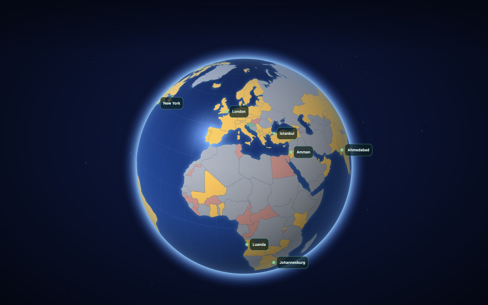

A market for the city’s next move
Bet on
cities!
Prediction markets for
the places we live.
The opportunity
Every city is full
of open questions
01 Will this park get built?
02 Will these homes go ahead?
03 Will this proposal happen?
Give a concrete proposal a market. Let people put a stake behind their expectations.
The product
A proposal.
Two positions.
YESNO
A shared pool of conviction about a specific place and outcome.
- 01
Publish a proposal
Show the change on the map and define what counts as success.
- 02
Take a position
Stake YES or NO. The pools make competing expectations visible.
- 03
Claim after resolution
The declared rule determines the outcome and winning payouts.
The feedback loop
Belief can
move a city
A credible forecast can draw attention to an overlooked idea. That attention can attract the people and backing it needs.
See what could change
Help make it possible
Act on the same proposals
Belief and action can reinforce each other.
Resolution
Public evidence
settles the bet
The market names its evidence rule before anyone stakes.
A clear rule
Name the proposal, accepted source, deadline and outcome test.
An observable fact
Read terminal proposal state or a source-hashed public court record.
A verifiable result
Apply the matching evidence. Resolve the market and pay the winning positions.
Working prototype
The loop
already works
A proposal, a stake, an evidence check, a payout.
Solana devnet
Test USDC. Demonstrated mechanics.
Real places on a shared map
Proposals connect designs, supporters and markets.
YES and NO pools
Wallets stake, read the pools and claim after resolution.
Evidence through settlement
Proposal-state and court-attestation paths demonstrated on devnet.
The next market is outside your window
Bet on
better cities.
Start with land & development
Grow the network of proposals, public evidence sources and forecasters, city by city.
A protocol people and agents can use
Paid proposal creation and verified facts provide an initial business model. Market fees are a further opportunity.